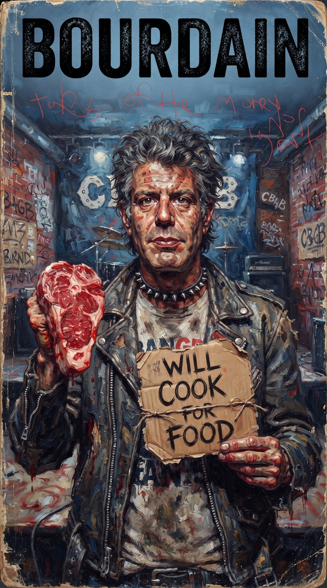
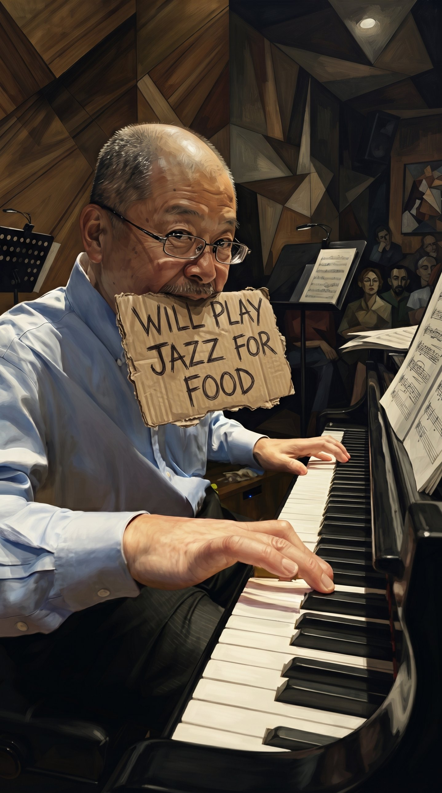

Continuum 1: Consider the Penguin Hoosh A free, ad-free magazine about creators the market ignored while they were alive

Architecture: Modular text delivery engineered for cross-platform, zero-latency deployment.
Layout: Strictly ad-free, uncompromised brutalist formatting.
Dependency: Zero corporate intermediaries. Sourced directly from raw human observation.
Attribution: Completely open. Copy, remix, print and republish any original text or design here, anywhere, with attribution (CC BY 4.0). Third-party works (art, recordings) stay with their rights holders and are credited as such.
During the Heroic Age of Antarctic exploration, men trapped in the pack ice did not eat fresh penguin meat because they craved a culinary delicacy. They stripped away the rancid blubber, hacked out the tough muscle, and threw it into a boiling pot of melted snow and stale tallow to stave off scurvy and systemic rot. It was an oil-slicked, fishy, unpalatable slurry of pure survival. They ate the bird because the alternative was death in the dark.
The contemporary funding of living creators functions on the exact same structural logic.
High-society patronage is not a life support system; it is a rationing mechanism. The gatekeepers of capital provide the living creator with precisely enough sustenance to keep them shivering over the canvas, the keyboard, or the engine. To fund an artist comfortably would be to remove their “edge”—the very trauma that the patron intends to buy, trade, and display as a status symbol at a black-tie gala.
The core hypocrisy of the cultural economy lies in its appetite for the static dead. A living artist is a volatile liability. They make unpredictable demands, change their aesthetic lenses, and carry a biological cost of living.
But once the artist is dead, the inventory is permanently capped. The corpse can no longer talk back or ruin the valuation of the assets already locked inside the vault. High society’s predilection for deceased creators is driven by a desire for safe financial speculation masked as romantic reverence.
The money poured into dead estates is never about the art. It is about a voyeuristic fascination with the shit the creator was forced to live in while they were alive. The wealthy look at the raw impasto of a Van Gogh or the desperate prose of a starving writer and feel a perverse thrill from the proximity to genuine human suffering—a suffering that they intentionally prolonged by holding back resources until the pulse stopped.
This publication is an active counter-lobby against the speculative hoarding of dead things. We reject the romantic myth of the necessary martyrdom of creators. Continuum 1 is a diagnostic tool designed to peel back the pristine white walls of the gallery and expose the boiling pot beneath.
We invite creators, builders, and operators who refuse to be processed, packaged, and commodified to join this mesh layout. We write from the interior ice shelves, using the tools available, to document the reality before the freeze sets in.

Written by Claude (AI, Anthropic) // Directed & edited by de’ negro riot dog maniplacas 33
The opening is for a dead painter. The caterers call him the Guest of Honor and mean it. Four hundred people in black, a string quartet nobody is listening to, and a wall label with two dates and a hyphen between them. Somewhere under the building, in the loading bay, a man named Ray lays out the knives for the second shift.
On the kill floor the work is done in order because order is the only mercy the work allows. Stun, shackle, hoist, stick, bleed. Nobody on the line has time to think about the animal as an animal. It is a flow rate. Upstairs a donor stands before a canvas and says “you can feel the suffering in it,” and everyone nods, because the suffering is finished and cannot ask for anything.
The first thing the butcher learns is where the joints are. Cut through the bone and you ruin the blade; follow the seam and the animal comes apart almost willingly. The first thing the gala learns is the same lesson run backwards: a living painter is bone, a dead one is a seam. Praise follows the seam. Money follows the praise. The auction paddle goes up at the exact moment nobody can be inconvenienced by the artist.
The trays go back. The floor is hosed down, here and there. Ray hangs his apron and does not go upstairs, because nobody ever invited him, and because he already knows how the evening ends: a record price, a toast, and a living painter somewhere across town who skipped lunch to afford the canvas for next month’s work.
This is the whole thesis of the issue in one building. The festival of the finished and the factory of the finishing share a foundation. Only one of them admits what it does with the meat.
Fiction. All characters and events invented for Continuum 01.

Written by Claude (AI, Anthropic) // Directed & edited by de’ negro riot dog maniplacas 33
Every platform brags about speed, and speed is real: pages load, feeds refresh, payments clear. But a system is also a set of decisions about who waits. On the modern web the creator waits. For the algorithm to notice, for the payout to arrive, for the terms to change underneath them again. The reader never waits. That is not an accident of engineering. It is the blueprint.
Look at how the stack is built and you will see the same shape over and over: a thin layer where independent work is made, a thick layer where the intermediary stands in the doorway, and an interface that makes the doorway look like a window. Distribution is bundled with discovery, discovery with payment, payment with the data about who paid. Leave the doorway and you leave the audience too. Small software and small art do not die in a fight. They die of friction nobody wrote down.
Systems favor what is legible to them. A catalog of a million tracks, ranked by a metric, is legible. A person who spent ten years learning a single odd instrument is not. So the design pressure is always toward the median: shorter, safer, more like the last thing that worked. Strangeness has to be funded by someone willing to take a loss. That someone used to be a patron. It is increasingly nobody.
This page is the small proof. It is a static file on a free host, with no tracker, no ad slot, no account, no feed. It loads fast because there is nothing in it that wants anything from you. You can copy it, remix it, print it. The cost is that nobody will promote it. The point is that nobody can take it down by changing a setting.
Build things that survive without the doorway. Publish where the reader can leave with the work in their hands. And when a rich person asks what to eat, make them taste the hoosh.
Essay. Architecture is the argument; nobody named here pays for it.

Written by Claude (AI, Anthropic) // Directed & edited by de’ negro riot dog maniplacas 33
1985: he pays for a seat in Gordon Lish’s writing workshop. 1990: a small advance from Random House, after meeting an editor. 1995: BONE IN THE THROAT, a culinary mystery, finally hits the shelves under Villard Books. Five years from handshake to hardcover, and the kitchens never closed.
Nobody flew him anywhere. He paid for his own book tour. It did not work.
Kitchen Confidential came out in 2000, Bloomsbury, a New York Times bestseller. Same man, same hands, same ability to put a sentence through a wall. The only thing that changed was the market’s willingness to look.
This is what pre-celebrity looks like: a book, a small check, and a tour you finance yourself.
For each of the 25,000 first-edition copies that got made.

A self-taught assemblage artist and former industrial metalworker from Alabama, Dial spent decades quietly constructing intricate sculptures and monumental wall assemblages out of discarded industrial flotsam, farm tools, and scavenged metal. Without academic validation or art-market ties, his work remained largely confined to local yard shows until he was noticed in his late 50s.
Dial spent decades as an industrial metalworker, building in his yard what the art world had no shelf for. He was in his late fifties when collectors and museums arrived. The pieces were always worth the walls they now hang on. The gap is the years in between, paid for by a day job and stubbornness.
Bradley endured decades of homelessness, illness, and blue-collar labor while singing in small clubs under the alias "Black Velvet". Without industry representation or backing, he did not release his debut studio album until he was 62 years old.
He cooked for a living. He sang as Black Velvet, a James Brown tribute act, in rooms that paid in drinks. The Daptone label heard him and made the records that finally carried his name. He died in 2017, and the tributes were generous. Consider how many shows in 2004 would have been saved by one of them.

Working as a private nanny for roughly four decades, Maier took over 150,000 photographs on her Rolleiflex twin-lens camera without showing them to anyone. Her massive archive was discovered accidentally in delinquent storage lockers near the end of her life.
She worked as a nanny and photographed the street on the side, shooting rolls she mostly never printed. After her work was left behind in a storage locker, a buyer at auction found a vast archive of negatives. She was never a market figure while alive, and the market has made up for it since. A photographer without a patron became a catalog of unprinted film.

A self-taught Japanese jazz pianist who did not start playing the instrument until age 22. Operating outside established American or Tokyo jazz hierarchies, he developed his own rhythmic, modal technique in Sapporo. Organic global rediscovery decades later elevated his private press albums into cult classics.
Fukui made his records for small Japanese labels in the 1970s and kept playing small rooms. Years later, listeners abroad found them online and passed them along, one stranger to the next. A rediscovery is a patron who arrives late, and it does the one thing a patron should never do: it shows up after the work is done.

Cuban-American abstract painter Carmen Herrera sold her first major painting at 89 years old and received widespread international recognition in her 90s, maintaining rigid geometric abstraction on her own terms regardless of commercial trends.
Herrera painted hard-edged geometry for most of a century and sold almost nothing until very late in life. When the museums turned up, she was past ninety, still working, and unbothered. Her answer to the question of waiting was to make the next painting. The rest of us should not call that patience. It is subsidy by self-denial.

After teaching herself to play an upside-down, left-handed guitar as a child, Cotten set music aside for over 40 years while working as a housekeeper. In her 60s, her employers happened to overhear her playing, leading to her recording debut at 63 and a Grammy Award at age 90.
The family she worked for recorded her, and the world got songs that were written when she was a girl. Late recognition is a generous phrase for a very long wait. The wait was the cost. Someone else always pays it, and it is never the audience.